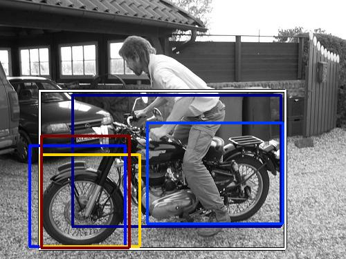
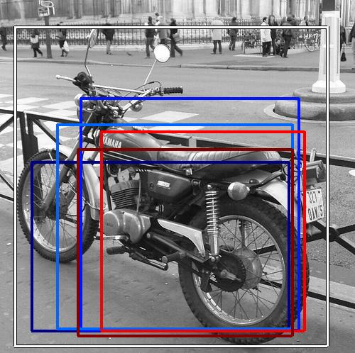
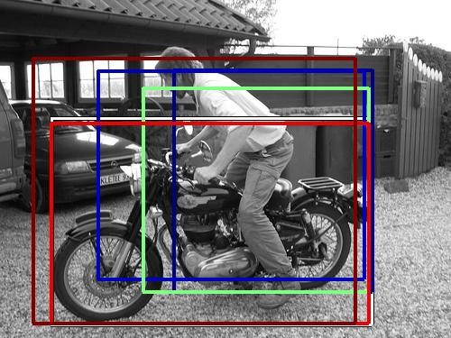
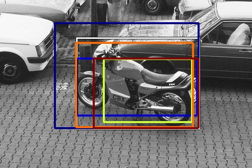
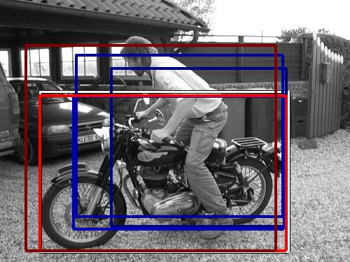
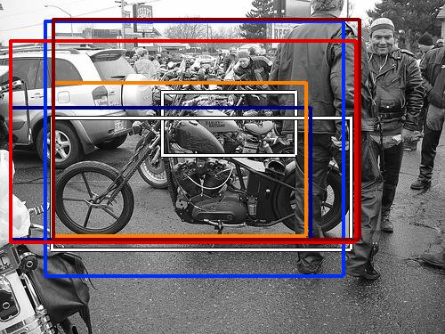
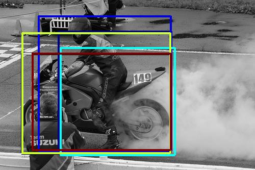
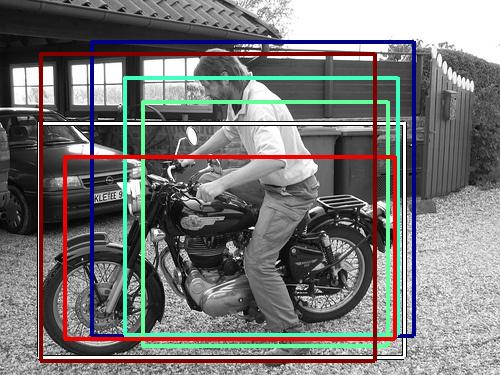

0.109897

0.502589

0.559483

0.582621

0.596990

0.663827

0.672660

0.701806

0.706209

0.715485
| Target image | 0.109897 | 0.502589 | 0.559483 | 0.582621 | 0.596990 | 0.663827 | 0.672660 | 0.701806 | 0.706209 | 0.715485 |
| Target image  |  20143.593750 |  16102.197266 |  12656.501953 |  9736.425781 |  7632.176270 |  7032.577637 |  6965.390137 |  5985.131836 |  5349.486328 |  4806.188477 |
| Target image  |  24253.029297 |  6773.232422 |  4938.150391 |  4767.945312 |  4701.940918 |  4546.377930 |  4066.393555 |  3379.136719 |  3297.267578 |  3163.711914 |
| Target image  |  70911.320312 |  8121.362793 |  6226.177246 |  4424.499512 |  3377.288818 |  3319.715332 |  3220.848389 |  3114.155518 |  3041.038086 |  3014.138916 |
Target image |  71783.867188 |  9655.422852 |  6252.104492 |  5653.229492 |  4300.886230 |  3263.628906 |  3127.906982 |  3019.202393 |  2824.635742 |  2799.395264 |